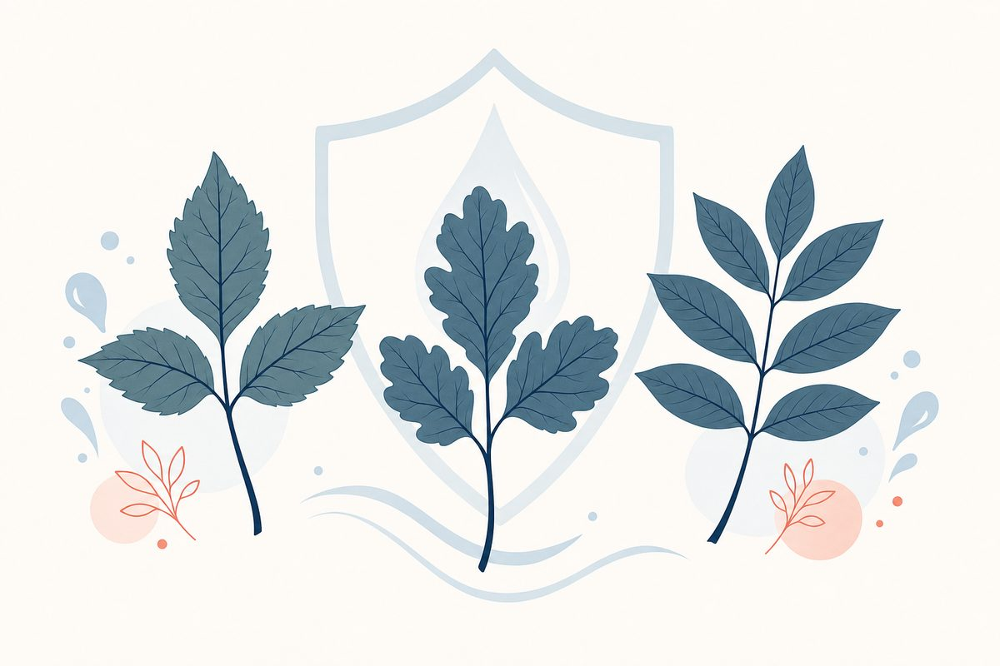

Key Points
- Urushiol, the oily sap in all three plants, is a potent allergen: according to NIOSH, an amount smaller than a grain of salt causes a rash in 80 to 90% of adults.[12]
- Wash exposed skin with soap and cool water as soon as possible after contact.[6]
- The rash is not contagious and blister fluid does not spread it; urushiol left on skin, clothing, tools, or pet fur does.[6]
- For severe poison ivy, AAFP guidance advises tapering oral prednisone over two to three weeks, because stopping steroids quickly can cause rebound dermatitis.[9]
- Oral or injected steroids may be prescribed for severe blistering, a rash on the face, hands, or genitals, or involvement of more than 20% of the skin.[1]
- Telehealth visits are well-suited for visual assessment, oral steroid prescribing, and follow-up management.

Urushiol: The Resin Behind Every Reaction
Poison ivy, poison oak, and poison sumac belong to the Anacardiaceae plant family.[5] All three contain an oily sap called urushiol in their leaves, stems, and roots.[1]
The rash urushiol causes is allergic contact dermatitis, which family-medicine guidance describes as a type IV, T cell-mediated, delayed hypersensitivity reaction. A first contact sensitizes the immune system. On re-exposure, the sensitized T cells set off an inflammatory cascade in the skin, and that inflammation is the rash you see.[9]
Very little urushiol is needed. According to the National Institute for Occupational Safety and Health (NIOSH), exposure to an amount of urushiol smaller than a grain of salt causes a rash in 80 to 90% of adults.[12]
Urushiol is also long-lasting. The FDA notes that the plant oil lingers, sometimes for years, on virtually any surface,[6] and NIOSH states that urushiol can remain active on the surface of objects for up to 5 years.[12]
Burning poison ivy, oak, or sumac is dangerous. NIOSH warns that burning these plants may lead to lung irritation and that inhaling smoke from burning plants can cause severe allergic respiratory problems.[12] If you find these plants in a yard or field, do not burn them; cut and bag them instead.
Identifying the Three Plants
Correct identification is the first step in prevention. Each plant looks different, but all three contain urushiol and cause the same kind of itchy, red rash.[1]
Poison Ivy (Toxicodendron radicans)
Poison ivy is the source of the well-known mnemonic "leaves of three, let it be."[12] According to the FDA, it is found throughout the United States except Alaska, Hawaii, and parts of the West Coast. It can grow as a vine or small shrub, trailing along the ground or climbing on low plants, trees, and poles, and each leaf has three glossy leaflets with smooth or toothed edges.[6] NIOSH describes eastern poison ivy as typically a hairy, ropelike vine.[12] Poison ivy, oak, and sumac are a hazard year-round.[6]
Poison Oak (Toxicodendron pubescens / T. diversilobum)
Poison oak has fuzzy green leaves in clusters of three that are lobed or deeply toothed with rounded tips. It grows as a low shrub in the Eastern and Southern United States, and in tall clumps or long vines on the Pacific Coast.[6] The JAMA patient page notes that poison oak can have 3 to 5 leaflets.[1]
Poison Sumac (Toxicodendron vernix)
Poison sumac grows as a tall shrub or small tree in bogs or swamps in the Northeast, Midwest, and parts of the Southeast. Each leaf has clusters of 7 to 13 smooth-edged leaflets.[6] NIOSH describes the leaves as arranged in pairs along the stem.[12] Unlike poison ivy and oak, poison sumac does not follow the "leaves of three" pattern.
| Plant | Leaflets | Habit | Primary Range |
|---|---|---|---|
| Poison Ivy | 3 (glossy, smooth or toothed edges) | Vine or small shrub, trailing or climbing | Throughout the US except Alaska, Hawaii, and parts of the West Coast |
| Poison Oak | 3 to 5 (fuzzy, lobed or deeply toothed) | Low shrub; tall clumps or long vines on the Pacific Coast | Eastern and Southern US; Pacific Coast |
| Poison Sumac | 7 to 13 (smooth-edged, in pairs) | Tall shrub or small tree | Bogs and swamps of the Northeast, Midwest, and parts of the Southeast |
How the Rash Develops: Type IV Hypersensitivity
The reaction to urushiol is a type IV delayed hypersensitivity response, driven by T cells rather than antibodies.[9] That helps explain why family-medicine guidance notes that antihistamines are generally not effective for the itch of allergic contact dermatitis.[9]
Timing depends on whether you have reacted before. In someone with a first exposure, the rash can take up to 3 weeks to develop. In people who are already sensitized, it typically appears 24 to 48 hours after contact.[1] The FDA notes that symptoms can emerge any time from a few hours to several days after exposure to the plant oil.[6]
It may seem like the rash is spreading when it appears over time instead of all at once. According to the FDA, this happens because the plant oil is absorbed at different rates on different parts of the body, or because of repeated contact with contaminated objects or oil trapped under the fingernails.[6]
Poison ivy and related plants often brush across the skin, causing linear streaks of redness and small blisters (vesicles).[9] When you see that linear pattern, it is a strong clue to the diagnosis.
Decontamination: Wash as Soon as Possible
The simplest step matters most: wash exposed skin as soon as possible. The FDA advises washing your skin in soap and cool water as soon as possible after contact with a poisonous plant.[6] The AAD notes that if you wash immediately after touching the plant, you may be able to wash off some of the oil and help prevent spreading it to other areas or other people.[7] The JAMA patient page also advises scrubbing under the nails with a brush to remove urushiol before it is absorbed.[1]
A practical tip for people who spend time outdoors: the AAD lists dish soap made for washing dishes by hand as one option for washing the skin,[7] so keeping a small bottle in the car or pack makes it easier to wash right away.
Decontamination Options
- Soap and water: the most accessible first-line approach. Use soap and cool water, and scrub under the fingernails with a brush.[1],[6]
- Isopropyl (rubbing) alcohol: a dermatology case report and review notes that, if available, isopropyl alcohol applied liberally and followed by copious rinsing with water is more effective than soap for preventing allergic contact dermatitis.[4] The AAD also lists rubbing alcohol as an option for washing the skin.[7]
- Commercial cleansers (such as Tecnu or Zanfel): products marketed to remove urushiol. The sources cited in this guide did not evaluate them, so washing with soap and water remains the first step.
While wearing gloves, wash everything that may have the oil on its surface, including clothing, gardening gloves, tools, and leashes. Rinse your pet's fur, and wash tools and other objects with warm, soapy water.[7] Pets matter because the oil can stick to their fur and cause a reaction in someone who pets them.[6]
Treating Mild to Moderate Reactions
Most poison ivy cases can be managed at home with over-the-counter products and, for larger or more uncomfortable rashes, prescription-strength topical corticosteroids. Get prompt care if the rash is around the eyes, the mouth, or on the genitals, or covers most of the body (see the emergency signs below).[7]
Topical Corticosteroids
Family-medicine guidance states that localized acute allergic contact dermatitis is successfully treated with mid- or high-potency topical steroids, such as triamcinolone 0.1% or clobetasol 0.05%, and that lower-potency steroids suit thinner skin:[9]
- High-potency: clobetasol propionate 0.05%, a prescription option for localized rashes away from thin-skinned areas.[9]
- Mid-potency: triamcinolone acetonide 0.1% (Kenalog) is a common prescription choice for localized rashes and is one of the agents named in family-medicine guidance for allergic contact dermatitis.[9]
- Low-potency: on thinner skin (skin folds, eyelids, face, and the anogenital area), lower-potency steroids such as desonide can help and minimize the risk of skin thinning (atrophy).[9] For a mild case, the AAD notes that a hydrocortisone cream or lotion can ease the itch.[7]
- Avoid high-potency topicals on the face, eyelids, and genitals unless a clinician directs otherwise, because these thin-skinned areas are where lower-potency agents are advised.[9]
Calamine Lotion and Astringents
Calamine lotion can reduce the itch.[7] Calamine lotion or creams containing menthol are among the home measures Mayo Clinic lists for poison ivy rash.[11]
Cool Compresses and Oatmeal Baths
Cool, wet compresses placed on the affected area for 15 to 30 minutes several times a day can soothe the rash.[11] Short, cool showers may also help, and short, warm baths with colloidal oatmeal added to the water can ease the itch.[7]
A Note on Antihistamines
The JAMA patient page notes that antihistamines do not relieve itching caused by allergic contact dermatitis, although they may improve symptoms by causing sedation.[1] Family-medicine guidance likewise says antihistamines are generally not effective for this itch.[9] Sources differ somewhat: the AAD says antihistamine pills can help reduce itching.[7] Sedating antihistamines such as diphenhydramine (Benadryl) may help people sleep through nighttime itching.[11] I don't recommend them as a primary treatment, but they have a place for nighttime symptom control. Do not apply an antihistamine to the skin: the AAD warns that doing so can worsen the rash and the itch.[7]
When Oral Prednisone Is the Right Call
For moderate-to-severe reactions, oral corticosteroids are the usual next step; a large claims analysis notes they are generally reserved and recommended for moderate to severe cases.[2] When allergic contact dermatitis covers more than 20 percent of the skin, systemic steroid therapy is often required and offers relief within 12 to 24 hours.[9]
Indications for Oral Steroids
Oral or intramuscular steroids may be prescribed in any of the following situations:[1]
- Rash involving the face; swelling on the face, especially if an eye has swollen shut, needs emergency care[7]
- Rash involving the genitals
- Rash involving the hands
- Rash covering more than 20% of the skin
- Severe blistering
The Taper Duration Problem
Duration is where poison ivy treatment most often goes wrong. Family-medicine guidance states that a steroid dose pack has insufficient dosing and duration and should not be prescribed.[9] The immune response to urushiol can take up to 14 days to present in sensitized patients, so shorter courses of oral corticosteroids carry a risk of rebound dermatitis, where the rash flares again after temporary suppression.[2]
A 2022 retrospective claims analysis in the Western Journal of Emergency Medicine (115,885 claims) found that oral corticosteroid prescriptions of 1 to 13 days were associated with higher odds of a return healthcare visit within 28 days than prescriptions of 14 to 20 days (adjusted OR 1.30, 95% CI 1.17–1.44). Because it is an observational study of return visits, it shows an association, not proof that short courses cause rebound.[2] A 2014 randomized controlled trial of 49 patients with severe poison ivy, by Curtis and Lewis, found that patients on a 15-day tapered course were significantly less likely to use other medications than those on a 5-day course (22.7% vs. 55.6%); rash return and time to healing did not differ significantly between the groups.[3]
The 6-day methylprednisolone (Medrol) Dose Pack contains a total of 84 mg of methylprednisolone tapered over 6 days. Expert opinion and one case report describe it as insufficient and likely to cause rebound rash,[3] and family-medicine guidance advises against prescribing a steroid dose pack.[9] If you were prescribed this and your symptoms return or worsen after completing it, contact a physician to discuss whether a longer, tapered course is needed. This can be evaluated either in person or through a telehealth poison ivy and oak visit.
Recommended Regimen
American Family Physician guidance on oral prednisone for extensive allergic contact dermatitis, including severe poison ivy (rhus) dermatitis:[9]
| Phase | Prednisone Dose | Duration |
|---|---|---|
| Initial treatment | 0.5 to 1 mg per kg daily | 5 to 7 days |
| Step-down, if comfortable after initial therapy | Dose reduced by 50 percent | Next 5 to 7 days |
| Severe poison ivy (rhus) dermatitis | Gradual taper; rapid discontinuation can cause rebound dermatitis | Taper over 2 to 3 weeks |
| Total for severe poison ivy | 2 to 3 weeks | |
The same guidance notes that the rate of reduction depends on factors such as the severity and duration of the dermatitis and how effectively the allergen can be avoided, so the exact steps are individualized by the prescribing clinician.[9]
The FDA label for methylprednisolone acetate (Depo-Medrol) states that in acute severe dermatitis due to poison ivy, relief may result within 8 to 12 hours after a single intramuscular dose of 80 to 120 mg.[10] This is a matter of clinical judgment rather than a default step: family-medicine guidance states that there is no evidence to support long-acting injectable steroids in the treatment of contact dermatitis.[9]
How Long Should the Prednisone Course Be? Common Regimens Compared
The single most common question patients bring to a poison ivy visit is how many days of prednisone they actually need. Short courses are common: in the 2022 claims analysis, most oral corticosteroid prescriptions for poison ivy dermatitis were for 1 to 13 days.[2] For severe poison ivy, family-medicine guidance advises tapering oral prednisone over two to three weeks.[9] The table below compares the regimens people are most often prescribed with what the cited sources say.[2],[3],[9]
| Regimen | What it typically delivers | What the evidence says |
|---|---|---|
| 3-day prednisone burst | A few days of prednisone, no taper | Shorter than the 5 to 7 day starting phase alone in family-medicine guidance.[9] |
| 5-day prednisone course | 5 days of prednisone, no taper | The short arm of the 2014 randomized trial. Patients used other medications more often than the 15-day tapered arm (55.6% vs. 22.7%), though rash return did not differ significantly.[3] |
| 6-day Medrol Dose Pack | 84 mg of methylprednisolone in total, tapered over 6 days | Described by expert opinion and one case report as insufficient and likely to cause rebound rash; family-medicine guidance says a steroid dose pack should not be prescribed.[3],[9] |
| 7-day prednisone course | About a week at a full dose | Matches only the starting phase of the family-medicine regimen, which advises a 2 to 3 week taper for severe poison ivy because rapid discontinuation can cause rebound dermatitis.[9] |
| 10-day prednisone course | A week and a half, with or without a taper | Still under 14 days. In one large claims analysis, courses of 1 to 13 days had higher odds of a return visit than courses of 14 to 20 days.[2] |
| 2 to 3 week tapered course | 0.5 to 1 mg per kg daily for 5 to 7 days, then stepped down, with the taper spread over 2 to 3 weeks | The regimen family-medicine guidance describes for severe poison ivy; in the 2014 trial, a 15-day tapered course reduced the use of other medications.[3],[9] |
Why short courses can fall short
The immune response to urushiol can take up to 14 days to present in sensitized patients, so a short course may end before that process finishes, and shorter courses carry a risk of rebound dermatitis.[2] If a short course was prescribed and the rash returned or never fully settled, ask a clinician whether a longer, tapered course is appropriate. This can be evaluated in person or through a telehealth poison ivy and oak visit.
Common Myths, Clarified
Myth: Blister Fluid Spreads the Rash
This one is extremely persistent. Even if blisters break, the fluid in them is not plant oil and cannot further spread the rash.[6] NIOSH likewise notes that fluid in blisters will not cause blisters to spread on you or others.[12] Scratching blisters open does carry a different risk: bacteria from under the fingernails can get in and cause an infection.[6]
Myth: The Rash Is Contagious
Poison ivy and other poison plant rashes can't be spread from person to person.[6] What does transfer is urushiol: if it's still on someone's skin, clothing, tools, or a pet's fur, touching those can expose you.[1],[6] The rash you develop is always the result of you contacting urushiol, not from contact with another person's rash.
Myth: Once You've Had Poison Ivy, You're Immune
The opposite is true. Allergic contact dermatitis appears on re-exposure, after the immune system has been sensitized,[9] so a past reaction means future contact can trigger the rash again. In sensitized people the rash typically appears 24 to 48 hours after contact, compared with up to 3 weeks after a first exposure.[1]
Myth: The Rash Spreads Because You Scratched
A person with poison ivy can't spread it on the body by scratching.[6] What looks like spreading is the rash appearing over time, because the oil is absorbed at different rates on different parts of the body, or because of repeated contact with oil on objects or under the fingernails.[6]
Fomites: The Overlooked Exposure Source
In clinical experience, contaminated objects (fomites) explain many cases where patients can't recall where they contacted the plant. The plant oil lingers, sometimes for years, on virtually any surface,[6] and NIOSH lists indirect contact with tools, livestock, or clothing that have urushiol on them as a route of exposure.[12]
Common fomite sources include:
- Gardening tools: loppers, pruning saws, gloves, and trowels used near these plants can carry urushiol on their handles and blades
- Pets: dogs and cats that roam wooded areas can carry the oil on their fur, which can cause a reaction in someone who pets them.[6]
- Clothing and gloves: a jacket you wore hiking may still have urushiol on the cuffs or collar if it hasn't been washed
- Camping gear: tent poles, tent stakes, and rope stored in outdoor areas can pick up plant oil over time
- Firewood: poison ivy vines often climb trees; handling vine-covered wood is an exposure risk, and burning it can send irritating smoke into the lungs[12]
Any item that has contacted these plants should be washed. NIOSH advises cleaning tools with rubbing alcohol or soap and lots of water.[12] Bleach rapidly inactivates urushiol on clothing and tools, and organic solvents such as alcohol or acetone can extract it from contaminated surfaces.[4]
Black-Spot Poison Ivy: The Uncommon Presentation
Occasionally, a patient comes in alarmed by black, lacquer-like staining on their skin rather than the typical red rash. This is called black-spot poison ivy. It happens when urushiol-containing sap is exposed to air and hardens by oxidation into a black resin, which can form on skin as well as on clothing and tools.[4]
The black lacquer develops within hours of exposure and comes before the allergic rash, in some cases by weeks. It cannot be washed off with soap and water and typically falls off in 1 to 2 weeks.[4]
Black spots are usually accompanied by an irritant skin reaction of varying severity, and in sensitized people an allergic rash can follow; that rash is managed the same way as other urushiol dermatitis. The lacquer is similar to the lacquer made from Japanese lacquer trees, which belong to the same plant family. On biopsy, the most consistent finding is yellow-to-brown discoloration of the cornified layer, with a varying, largely lymphocytic inflammatory infiltrate.[4]
Complications to Watch For
Secondary Bacterial Infection
Scratching can cause an infection.[7] Signs that the rash may be infected include redness, pain, pus, or draining,[7] and the FDA lists a temperature over 100 degrees Fahrenheit as a reason to see a doctor.[6] If a bacterial infection has developed at the rash site, a doctor might prescribe an oral antibiotic.[11]
Erythema Multiforme-Like Reactions
Rarely, a rash may change character, for example with target-shaped spots appearing at sites distant from the original rash. A change like this falls outside the usual pattern of poison ivy and needs evaluation by a physician.
Eye and Airway Involvement
Urushiol on the face and around the eyes can cause marked swelling. The AAD advises going to the emergency room for a rash around one or both eyes, or for swelling on the face, especially if an eye has swollen shut.[7] A rash on the face is one of the situations in which oral or intramuscular steroids may be prescribed.[1] Inhaling smoke from burning plants can cause severe allergic respiratory problems and needs urgent care.[12]
- Difficulty breathing or swallowing[7]
- A rash around one or both eyes, your mouth, or on your genitals[7]
- Swelling on your face, especially if an eye has swollen shut[7]
- Itching that worsens or makes it impossible to sleep[7]
- A rash on most of your body, or a fever[7]
- A severe allergic reaction, such as swelling or difficulty breathing (call 911)[12]
Prevention: What Actually Works
Learn to Identify the Plants
The most reliable prevention is recognition. Take the time to learn what poison ivy looks like in your region. Its leaves are reddish in spring, green in summer, and yellow, orange, or red in fall.[6] The vine form climbing trees is especially easy to miss. Many outdoor organizations publish free plant identification guides specific to local regions.
Clothing Barriers
If you may be working around poison ivy, the FDA advises long sleeves, long pants tucked into boots, and impermeable gloves.[6] Wash these items after use instead of leaving them in a pile in the car or garage, where the urushiol can transfer to other surfaces.
Bentoquatam (IvyBlock)
Bentoquatam lotion (brand name Ivy Block) protects the skin like a shield against poison ivy, poison oak, and poison sumac by physically blocking skin contact with their resin. It is available without a prescription and is not recommended for children under 6 years of age. Apply it to skin that may be affected at least 15 minutes before exposure, and reapply whenever the dry film is no longer visible, or every 4 hours as needed.[8]
NIOSH notes that a barrier lotion containing bentoquatam may offer some protection before contact.[12] It is meant for use before exposure; if a rash or irritation occurs, stop using it and check with a health care professional.[8]
Post-Exposure Washing Protocol
If you know you've been exposed, act right away:
- Wash exposed skin as soon as possible with soap and cool water[6]
- Scrub under the fingernails with a brush[1]
- Put on gloves, remove your clothing, and place all of it in a washing machine[7]
- While wearing gloves, wash everything that may have the oil on its surface, including tools[7]
- Rinse your pet's fur if your pet may have touched the plants[7]
How Telehealth Fits Into Poison Ivy Care
Poison ivy is a condition well-suited to telehealth management. The diagnosis is usually made from how the rash looks and the history of outdoor exposure; linear streaks of redness and blisters where the plant brushed the skin are a typical clue.[9] A good-quality photo or live video examination can usually show these features.
What a telehealth visit can accomplish:
- Assessment of severity: evaluating whether topical treatment is adequate or whether oral steroids are warranted based on how much skin is involved and whether the face, hands, or genitals are affected
- Oral prednisone prescribing: the most important clinical decision in moderate-to-severe cases, and one that can be made remotely based on a described and photographed rash
- Correct taper duration: helping avoid the rebound dermatitis linked to steroid courses that stop too quickly
- Prescription topical corticosteroids: stronger options such as clobetasol for localized rashes where OTC hydrocortisone is not enough
- Follow-up assessment: checking for secondary infection, steroid response, or need for taper adjustment
What telehealth cannot replace: evaluation of suspected airway involvement, severe facial swelling affecting vision, or signs of systemic infection requiring in-person examination. Those warrant urgent in-person care or the ER.
If you have a rash that you suspect is from poison ivy, oak, or sumac and you're unsure whether it warrants treatment or what treatment is appropriate, you can be seen in person at an urgent care or primary care office, or through a telehealth poison ivy and oak visit, which can provide a clinical assessment and a prescription if needed, often within hours and without a waiting room.
Frequently Asked Questions
For a mild, localized rash, oral steroids may not be needed at all; topical steroids are the usual treatment. For a moderate-to-severe rash, a 5 or 7-day course is usually too short. In a randomized trial, patients on a 5-day course needed extra medication more than twice as often as those on a 15-day tapered course (55.6% vs. 22.7%), although rash return did not differ significantly. Family-medicine guidance advises tapering oral prednisone over two to three weeks for severe poison ivy, because rapid discontinuation of steroids can cause rebound dermatitis.
The standard 6-day Medrol Dose Pack delivers a total of 84 mg of methylprednisolone tapered over 6 days. The immune response to urushiol can take up to 14 days to present in sensitized patients, so a short course can end before the inflammation does, and shorter courses carry a risk of rebound dermatitis. Expert opinion and one case report describe the dose pack as insufficient and likely to cause rebound rash, and family-medicine guidance says a steroid dose pack has insufficient dosing and duration and should not be prescribed.
Prednisone is a systemic corticosteroid that suppresses the immune response to urushiol that drives the rash. Because it works throughout the body, it can control a widespread rash that topical treatments cannot cover well; family-medicine guidance notes that when more than 20 percent of the skin is involved, systemic steroid therapy offers relief within 12 to 24 hours. It does not neutralize urushiol or cure the allergy. It controls the inflammation while the skin recovers, which is why the course has to last long enough for that recovery to finish.
No. Even if blisters break, the fluid in them is not plant oil and cannot spread the rash. The rash can seem to spread because the oil is absorbed at different rates on different parts of the body, or because of repeated contact with urushiol on tools, clothing, pet fur, or under the fingernails.
For severe poison ivy, family-medicine guidance advises tapering oral prednisone over two to three weeks, because rapid discontinuation of steroids can cause rebound dermatitis, where symptoms return after the medication stops. A 2022 claims analysis in the Western Journal of Emergency Medicine found that prescriptions of 1 to 13 days were associated with higher odds of a return healthcare visit than prescriptions of 14 to 20 days. As an observational study, it shows an association rather than proof of cause.
The rash itself is not contagious. You cannot catch it by touching someone's rash or blister fluid. However, urushiol oil on a person's skin, clothing, tools, or pet fur can transfer to your skin and trigger a reaction in you. The oil, not the rash, is what spreads.
Wash as soon as possible. The FDA advises washing skin in soap and cool water as soon as possible after contact, and the AAD notes that washing immediately after touching the plant may remove some of the oil and help prevent spreading it. The sources reviewed for this guide give no exact time window. The AAD also lists rubbing alcohol and dish soap as options, and a dermatology case report and review notes that isopropyl alcohol followed by copious rinsing with water is more effective than soap for preventing the rash.
Oral or intramuscular steroids may be prescribed for severe blistering, a rash on the face, hands, or genitals, or involvement of more than 20% of the skin. For localized rashes, mid- or high-potency topical corticosteroids such as triamcinolone 0.1% or clobetasol 0.05% are often sufficient.
The rash typically resolves within 1 to 3 weeks, and often goes away on its own in two to three weeks. Oral corticosteroids are used for moderate-to-severe cases to control symptoms; when more than 20 percent of the skin is involved, systemic steroids offer relief within 12 to 24 hours.
Yes. The FDA notes that the plant oil lingers, sometimes for years, on virtually any surface, and NIOSH says urushiol can remain active on objects for up to 5 years. Clean tools with rubbing alcohol or soap and lots of water. Bleach rapidly inactivates urushiol on clothing and tools. Never burn plants that may contain urushiol: inhaling the smoke can cause severe allergic respiratory problems.
Black-spot poison ivy occurs when urushiol-containing sap oxidizes on the skin, forming a black lacquer-like deposit within hours of exposure. It comes before the allergic rash, in some cases by weeks. The black lacquer cannot be washed off with soap and water and typically falls off in 1 to 2 weeks. Any allergic rash that follows is treated the same way as other urushiol dermatitis.
Sources & References
- Weinberg L, Malani PN. Poison Ivy, Poison Oak, and Poison Sumac. JAMA. 2024;331(21):1872. JAMA Patient Page. doi:10.1001/jama.2023.26355. jamanetwork.com/journals/jama/fullarticle/2818663
- Butt M, Flamm A, Marks JG, Flamm A. Poison Ivy Dermatitis Treatment Patterns and Utilization: A Retrospective Claims-based Analysis. Western Journal of Emergency Medicine. 2022;23(4):481-488. doi:10.5811/westjem.2022.March.55516. pmc.ncbi.nlm.nih.gov/articles/PMC9391006/
- Curtis G, Lewis AC. Treatment of Severe Poison Ivy: A Randomized, Controlled Trial of Long Versus Short Course Oral Prednisone. Journal of Clinical Medicine Research. 2014;6(6):429-434. doi:10.14740/jocmr1855w. pmc.ncbi.nlm.nih.gov/articles/PMC4169084/
- Chastant LR, Davis T, Libow L. Black-spot poison ivy, a report of 3 cases with clinicopathologic correlation. JAAD Case Reports. 2018;4(2):140-142. doi:10.1016/j.jdcr.2017.09.035. pmc.ncbi.nlm.nih.gov/articles/PMC5789763/
- Monroe J. Toxicodendron Contact Dermatitis: A Case Report and Brief Review. Journal of Clinical and Aesthetic Dermatology. 2020;13(9 Suppl 1):S29-S34. PMID 33349791. pubmed.ncbi.nlm.nih.gov/33349791/
- U.S. Food and Drug Administration. Outsmarting Poison Ivy and Other Poisonous Plants. FDA Consumer Updates. Content current as of June 9, 2021. Accessed November 7, 2026. fda.gov/consumers/consumer-updates/outsmarting-poison-ivy-and-other-poisonous-plants
- American Academy of Dermatology. Poison ivy, oak, and sumac: How to treat the rash. Last updated June 1, 2026. Accessed November 7, 2026. aad.org/public/everyday-care/itchy-skin/poison-ivy/treat-rash
- Mayo Clinic. Bentoquatam (Topical Route): Description and Brand Names. Last updated August 1, 2026. Accessed November 7, 2026. mayoclinic.org/drugs-supplements/bentoquatam-topical-route/description/drg-20062189
- Usatine RP, Riojas M. Diagnosis and Management of Contact Dermatitis. American Family Physician. 2010;82(3):249-255. PMID 20672788. aafp.org/pubs/afp/issues/2010/0801/p249.html
- Pharmacia & Upjohn Company LLC (Pfizer). DEPO-MEDROL (methylprednisolone acetate injectable suspension, USP) prescribing information. DailyMed, U.S. National Library of Medicine. Label updated January 21, 2026. Accessed November 7, 2026. dailymed.nlm.nih.gov/dailymed/drugInfo.cfm?setid=823b0010-2b57-4e76-b5ac-4a8c2963438f
- Mayo Clinic. Poison ivy rash: Diagnosis and treatment. May 15, 2024. Accessed November 7, 2026. mayoclinic.org/diseases-conditions/poison-ivy/diagnosis-treatment/drc-20376490
- National Institute for Occupational Safety and Health (NIOSH), Centers for Disease Control and Prevention. Poisonous Plants and Work. Reviewed October 1, 2026. Accessed November 7, 2026. cdc.gov/niosh/outdoor-workers/about/poisonous-plants.html